CPU扩展设计--AXI总线接口实现
前言
同步/异步读介绍
《CPU设计实战》有这样一句话：在大多数真实的计算机系统中,CPU通过总线与系统中的内存、外设进行交互,没有总线,CPU就是个“光杆司令”,什么工作也做不了。
也因此，我们需要在CPU上设计总线接口，让我们的CPU能与总线进行交互，不再是孤岛。
还记得我们在P3-P7设计的取指和取值吗？
我们的地址在本周期发出，指令或者值便可以在本周期取回。这是一种异步读。这种设计现在看来大大帮助我们减轻了CPU设计的负担，但是所谓凡事皆有利弊，这种设计也在另一方面加剧了FPGA板子资源的消耗。
FPGA板子上有各种IP核（固化好的Ram资源等），如果我们这样设计，我们的CPU将不能利用这些高速资源，而是会用触发器层层叠搭，搭出一个异步读的Ram,这种方式导致了资源的浪费和速度的降低。
这些IP核的读取都是同步读，即地址在本周期发出，数据返回在下一周期或者更后面的某一周期。
Sram接口
优势
也因此，我们在P8进行板级验证的时候，不得不对我们的CPU做出修改，实现了当时不知道名字，现在知道它叫Sram接口的一种总线接口。
这种接口表现为CPU地址本周期发出，数据一定在下一周期返回。这种接口使得我们可以利用FPGA上的IP核，节省了资源，提速了CPU，让我们得以完成板级验证。
这种接口设计也较为简单。适合我们进行计组学习。
当时不觉得
缺陷
我们需要考虑这样一个问题，CPU的运算速度是远远高于RAM的读取速度的，如果采用Sram接口我们需要考虑一个问题：
我们的每个周期时长要怎么设计才能保证数据一定在发出地址的下一周期返回呢？
显然，我们的CPU周期需要大于等于RAM的读取周期。但绝大多数情况下，CPU的运算是远远快于RAM的，所以采用这种接口，我们速度就直接受限于RAM的速度。也因此，我们需要寻求一种新的总线接口，让CPU的周期与RAM的周期脱钩，读取一次数据需要多个周期才能返回，让CPU飞起来————AXI总线接口
AXI设计
学习策略
在《CPU设计实战》中，有相关的学习章节，但是笔者认为设计实战这本书忽视了很多细节上的东西，这也是笔者写这篇博客的初心，笔者将重点讲一些设计细节。
大家利用《CPU设计实战》辅以本篇博客学习就好。
《CPU设计实战》分享
提取码：k79h
方法选择
设计AXI总线接口我们有两条路可走：
1.改造CPU的SRAM接口为类SRAM接口，之后搭建类Sram转AXI的转接桥，与CPU一起封装，使得CPU在外观上表现为AXI接口
2.直接设计CPU的AXI接口
考虑到直接设计AXI还是比较有难度的，毕竟这种协议已经是比较新的协议了QAQ。所以笔者采用了第一种，先加深一下对AXI的理解，后续有时间再选择方法2。(挖坑√)
类Sram设计
握手机制
还是前面那句话，凡事皆有利弊，一旦CPU的周期和RAM的周期脱钩，那么每次我们向RAM请求读取数据时，数据的返回时刻就已经不再是固定在几周期后，而是随机的了，那RAM怎么知道哪一个周期的地址是有效的呢？或者说CPU怎么才能知道数据什么时候返回呢？这就需要master(CPU端)与slave(RAM端)互相握手，在地址传递过来的时候，和RAM握个手，告诉RAM当前地址有效。在数据传过来的时候，和CPU握个手,告诉CPU当前周期数据有效。
信号

我们对比一下Sram信号：
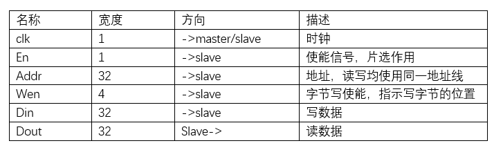
我们发现信号其实大差不差，多出来的信号就是由于握手机制的引入。一次读写一共握手两次。我们解释一下req,size,addr_ok,data_ok信号：
size:来源于AXI总线协议，功能在信号中已经提到，我们不提，我们说一下为什么这个信号会引入，这其实是为了方便AXI的设计，在AXI的设计中，有arsize和awsize信号，我们生成size信号是为了方便生成这两个信号。
req:来源于握手机制，master向slave端传递，传递本周期地址信号有效的信息。表示需要对该地址进行取值。
addr_ok:来源于握手机制，slave向master端传递，用于和req信号一起完成读写请求的握手。表示slave端已经收到正确的addr。
data_ok:来源于握手机制，slave向master端传递，有两种含义，在读RAM中这个信号有效保证当前周期读出的数据有效。在写RAM中表示写入完成。
以上解释只解释了一次握手，为req和addr_ok的握手，那另一个握手在哪呢？
其实是与data_ok相关的一个握手，大家想一想，slave向master发出信号(addr_ok)说当前数据有效，讲道理master是不是也应该给slave发出一个信号表示数据收到？但在类sram接口中，我们认为master是时刻准备好接受信号的,所以一旦addr_ok有效，master端（CPU端)就会将数据存起来。也因此这个握手就不需要了。不过你也可以认为这是一个隐形的握手，只不过matser一直在伸手，只等slave伸手（addr_ok）
读写时序
读RAM时序：
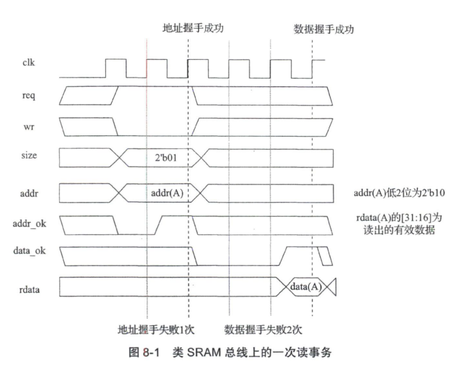
写RAM时序：
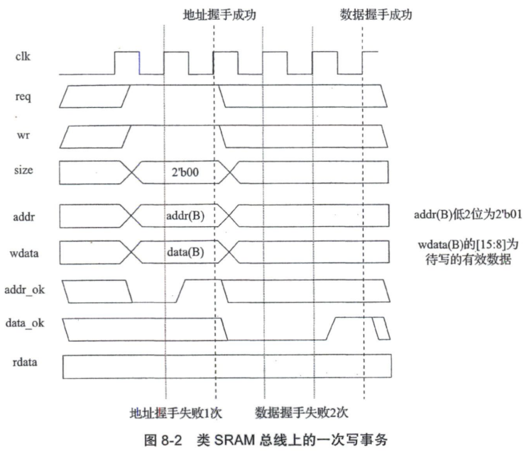
可以结合一下各个信号的功能进行理解。尤其是Req,Addr_ok,Data_ok。
设计细节
多重读写干扰
既然读写需要多周期完成，那么在一次读或写的中途，是否可以又来一个读写请求呢？当然是可以的：
在写中读：
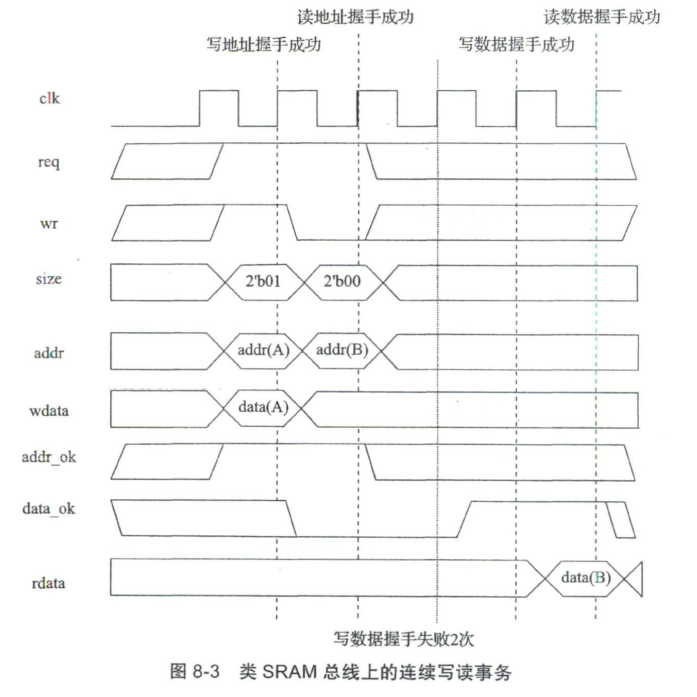
在读中写：
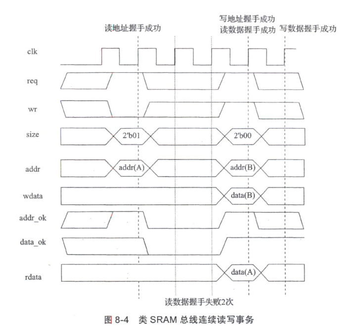
也就是说，在这种接口的情况下，可能会出现这样的序列：
$$({\rm{re}}q1\& addr\_ok1) \to ({\rm{re}}q2\& addr\_ok2) \to (req3\& addr\_ok3) \to ..... \to data\_ok1$$
那有人就要问了，这么复杂？中间有多少个序列都是不确定的，那怎么写?
遇事不决摆大烂，这是我的回答，我们直接拒绝这种情况的发生，我们可以引入一个Undone信号，在一次读取的addr_ok直至data_ok之中，使其一直有效，然后利用它表示一次读写还没有完成。那么只要没有完成，我们就统统拒绝新请求，这是不是得到了解决?
当然,你也可以去写相关逻辑去实现多重读写，但或许我们需要考虑投入与产出，也就是性价比。
取值取值干扰
在Sram接口中，取值和取指是两套接口，为了便于完成Sram接口到类Sram接口的转化，所以我们也分别改造这两套接口为两套类Sram接口：
1 | //inst sram-like |
但是在AXI总线中，这两套接口将公用一套接口（后续会讲到），所以如果一套接口的Undone阶段，另一套接口也发起了请求，那么在AXI公用的接口上，就可能（注意是可能）会表现出前一细节所提到的多重读写问题，所以我们需要同样利用两套接口的Undone信号避免出现多重读写。
CPU运行逻辑
取指未完成
在这种情况下，显然CPU是无法工作的，但是D级及以后的已经取好的指令是可以正常工作的，这是不是很像我们之前实现的暂停？
是的，我们正是要实现这种暂停。但是如果我们只是简单的将其加入暂停信号。也不是不行，但我们可以想想，这种暂停意味着：
在IF级的PC等待接口取回指令，取好后一起送到ID级运行。这是不是就是我们P7之前的实现方法，在逻辑上等同于异步读，或者换句话说，逻辑上等同与在IF_ID级加回了我们已经短接的ID_Instr这个流水线寄存器。这样是可以正常跑的，但是会带来效率问题：
如果性能拉满，即当周期发出请求，当周期提示addr_ok，下周期返回data_ok，相当于Sram取指，那么这种ID_Instr寄存器会导致必定暂停一周期。这是我们需要考虑的点。
所以为了避免这种潜在的效率浪费，我们可以实现这种特殊的暂停（也是我个人的实现方法）：
设置两个暂停信号，ID_Addr_Stall和ID_Data_Stall。控制不同部件的暂停。ID_Addr_Stall无效（即不暂停）对应取指地址Ok（Addr_ok有效)，在这种情况下，将IF的地址送到ID级。
ID_Data_Stall无效（即不暂停）对应取指地址Ok（Data_ok有效)。在这种情况下，将IF的指令送到ID级。
ID集齐正确的PC与指令，直接发车。
这两个暂停共同构成了IF阶段的暂停。这种异步方式可以保证性能拉满的情况下不会暂停一周期。
取值未完成
与取指令实现思路类似。但暂停是一种更为特殊的暂停，我愿意称其为冻结。一旦进入取值的Undone状态，整个CPU都会被冻结，所有流水级都将停止流水。毕竟，MEM级已经被卡住了，总不能让后面的跑上来吧。
这里本来是有一个细节的，就是假如不考虑取值和取指的相互影响，那么在取值的Undone状态，取指的请求也可能在Undone之前已经发出，数据在Undone之中返回，那么我们就需要一个寄存器将其存在D级当中，等待冻结结束和D级PC一起发车。但如果我们设计了取值和取指的相互影响。这个也就不存在了。取值一定不取指。取指一定不取值。
跳转处理
考虑这么一种情况：
由于IF取指要多周期，而一旦ID级集齐了PC和指令，ID就会发车,那么这个跳转信号只会持续一周期。那么就极有可能产生当IF读取下一地址时。由于ID级已经不是跳转指令导致了IF错误读取PC+4。
因此我们需要在ID阶段设计一个寄存器保存每一次跳转指令的目标PC值。并保存一个标记信号。一旦有跳转产生，就将信号置为有效。直到确认addr_ok读取到了这个保存的PC值。再将其置为无效。等待下一跳转指令。
1 | always @(posedge clk) begin |
异常中断处理
取指未完成
由于在我们的设计中，取指暂停的只是IF级。ID级之后是可以正常运行的，所以很有可能出现在取指的Undone阶段，MEM的CP0读取到了异常/中断。那么我们需要手动丢弃这一次的取指，因为由精确控制我们知道，我们认为MEM之前的指令都未发生，MEM之后的指令都已经完成。
为了解决这个问题，我在ID_Instr上新增了一层逻辑，称为ID_Instr_Real。并引入一个新的信号Sram_clear_sign。该信号在Req（异常信号）信号有效时根据Undone是否有效决定自身的有效状态。并保持状态。直到IF取出指令。我们利用该信号在ID_Instr_Real上做三目运算。如果Sram_clear_sign有效，我们就传空泡（Nop），掩盖住ID_Instr的真实值。
1 | always @(posedge clk) begin |
取值未完成
这个是不存在的，CP0在MEM级，若Store和load有问题，那么就设计一下让其不产生请求。其余的指令本来就不会产生请求。
Eret处理
Eret是一种特殊的跳转，没有延迟槽的跳转。如果我们将其简单视为跳转指令的一员。归入跳转处理，那么会导致延迟槽的出现。
且会有这样一个问题：由于Eret没有延迟槽，那么假如Eret的目标PC对应的指令也为跳转指令，就会导致Memory_BJ_sign的错误处理。（本来是关闭Eret的Memory_BJ_sign，结果一同关闭了跳转指令的sign，导致跳转失效），所以我们要单独为其开辟一个新寄存器和信号。
但处理思路是类似的，仍然需要保存。除此之外，我们还需要仿照前一细节产生IF_PC_Real信号，一旦Eret来到D级,直接越过IF_PC这个模块直接更改PC的值，防止延迟槽的产生。
1 | always @(posedge clk) begin |
AXI基本原理
原理解释
在Sram或者类Sram中，我们的读写频道是合并在一起的，要么读要么写，两者不能并行，但是在AXI总线协议中，实现了读写频道的分离，这里借助一下AMBA官方的AXI协议文档的图帮助大家理解：
读频道：
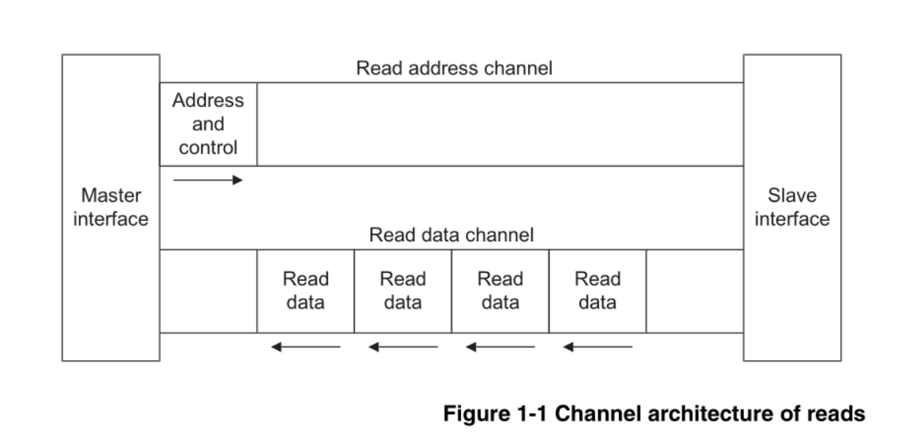
我们将读请求作为一个频道，对应的一套信号为AXI读请求通道。
数据返回作为了另一个频道，对应的一套信号为AXI读响应通道。
写频道：
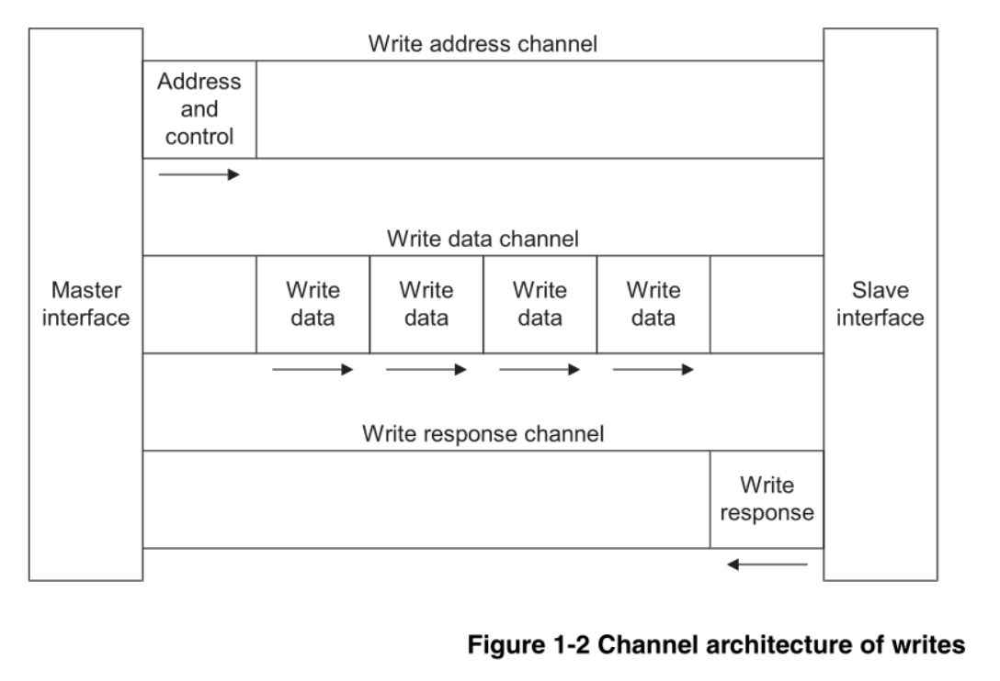
我们将读请求作为一个频道，对应的一套信号为AXI写请求通道。
数据写入作为了另一个频道，对应的一套信号为AXI写数据通道。
响应返回作为了另一个频道，对应的一套信号为AXI写响应通道。
为什么写有3个频道而读只有两个频道？
只是因为写需要Master端提供数据，所以需要多一个频道。
信号及解释
信号有很多，但不要望而生畏，在我们没有实现cache之前，很多都是用不上的固定值。
AXI全局信号：
AXI读请求通道：
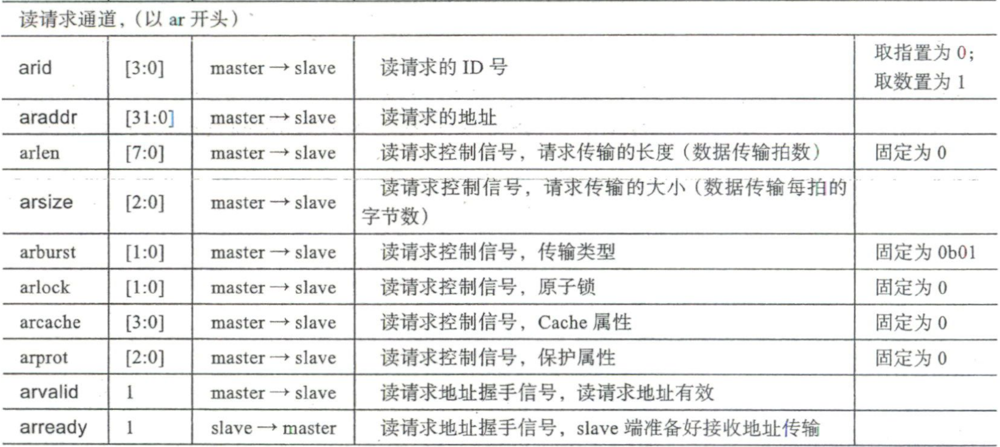
arid：在AXI总线协议中，我们可以设计乱序发射CPU，这就需要一个ID号来与读响应通道进行对应，让我们知道我们发射的哪个请求对应哪个数据，不过我们目前还用不到这么高级的CPU设计方法，可以忽略。恒为0即可。(相同ID内响应不能乱序；不同ID间可以乱序)
arlen：这个是实现cache会用到的，一次读数据，同时将周围的数据都读进来，现在不需要，置为0。
arsize：按表格理解即可.
arburst: 突发传输，也和cache有关，目前未实现cache固定为1即可。
arlock: 与访问机制有关，目前固定为0.
1 | AXI3: |
AXI读响应通道：
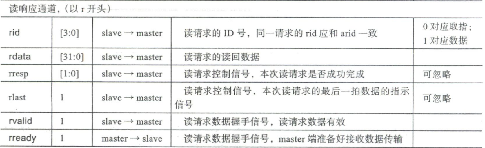
rid:与arid对应，含义相同。
rlast: 这个其实是在突发传输中用于标记最后一个传输值，告诉Master本次传输结束。也与cache有关，而且我们这里一次只传输一个值，所以直接固定为有效即可。
AXI写请求通道：
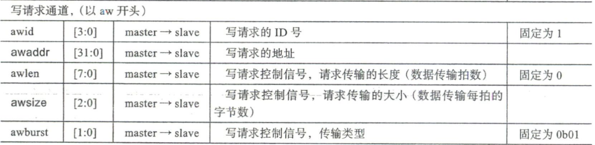
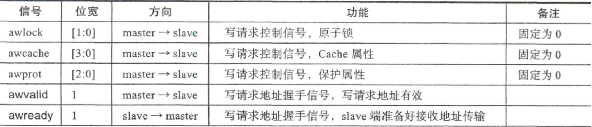
AXI写数据通道：
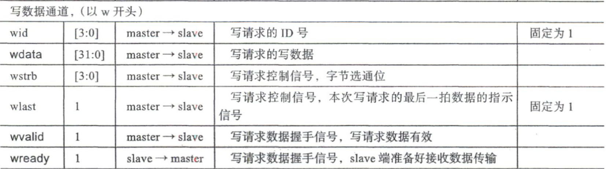
AXI写响应通道：
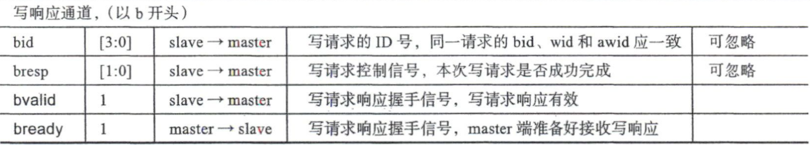
写通道与读通道信号类似，不再赘述。
详细学习
参照AMBA AXI总线协议
AMBA协议分享
提取码：cb1g
转接桥搭建
其实到了这一步，知道每个信号的含义，我们就已经能写出从Sram到AXI的各个信号对应了。在这里笔者分享一个龙芯官方的AXI转接桥（侵删），大家可以参照学习一下。这个部分不是很难，思路对了就对了，不像前面改接口那样需要注意很多细节。
1 | module cpu_axi_interface |
最后
新建一个Verilog文件，将CPU和转接桥作为模块写在这个文件中，我们就得到了一个封装好的，外观上看起来是AXI接口的CPU。
2023年2月14日挖坑：或许实现了Cache会回来更新，只是或许，对吧？